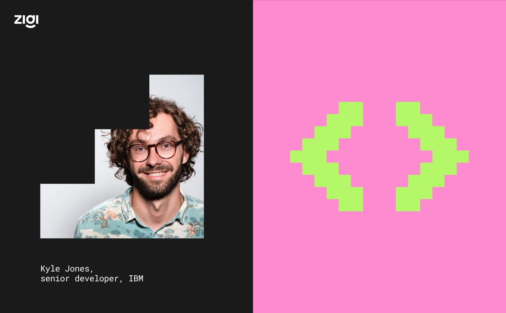
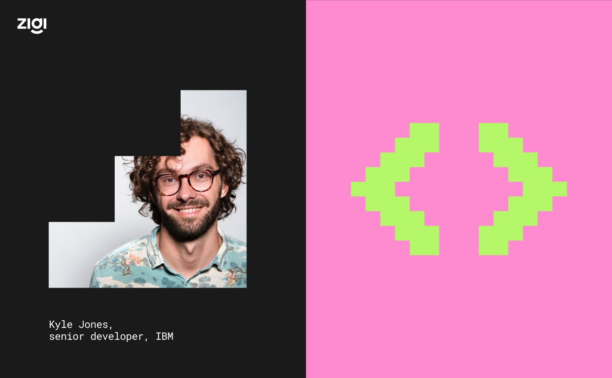
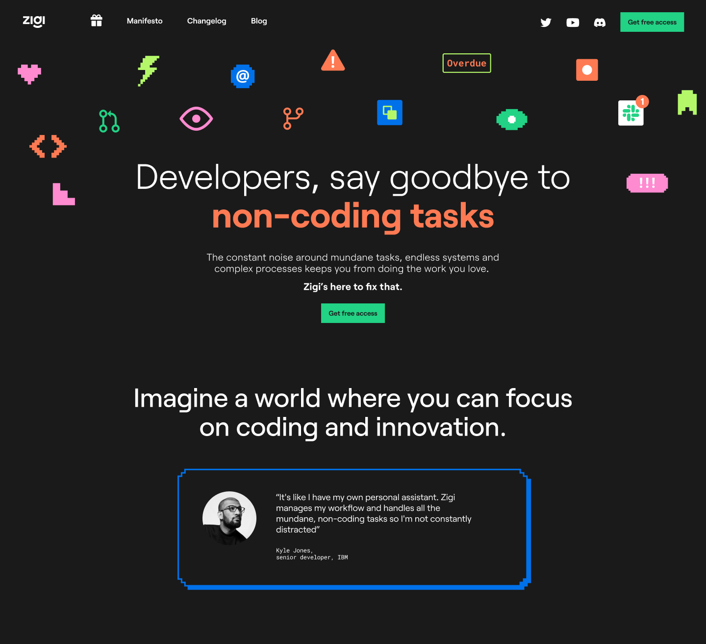
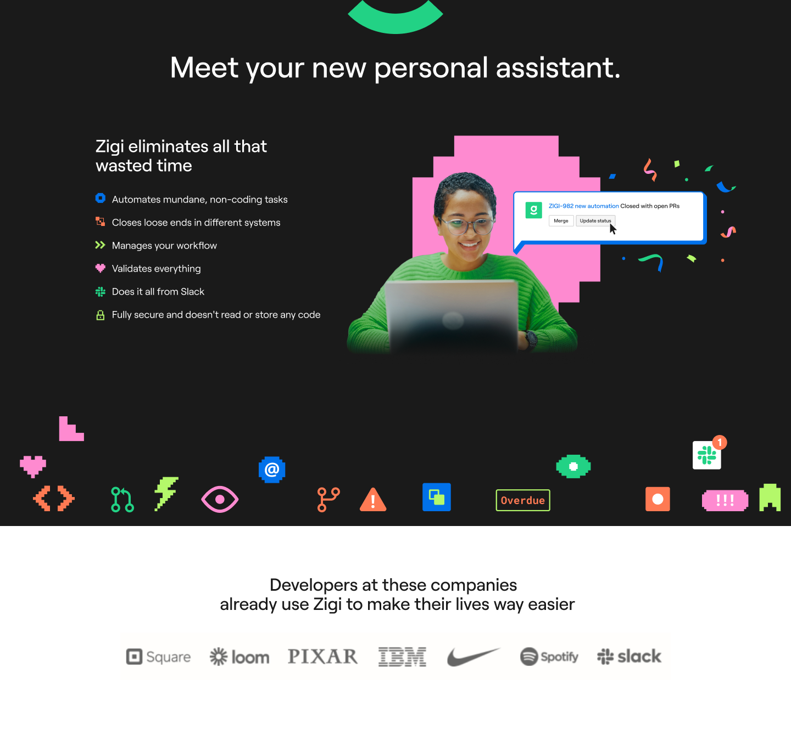
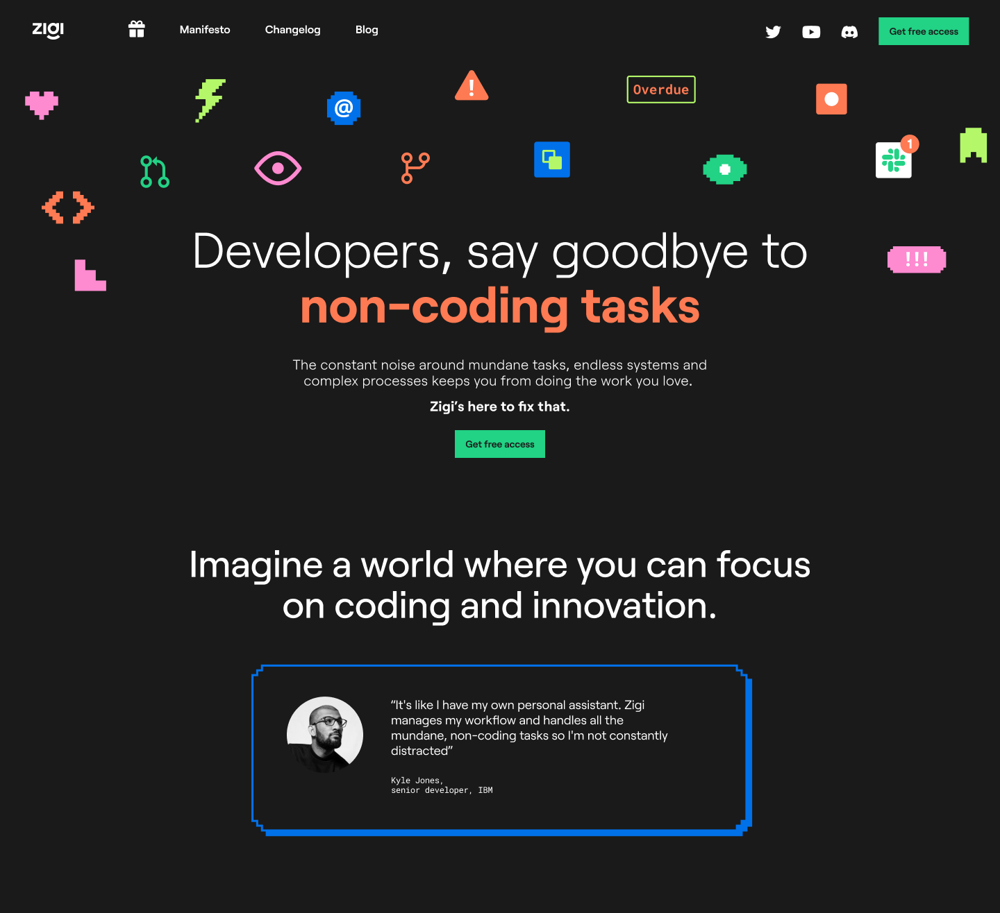
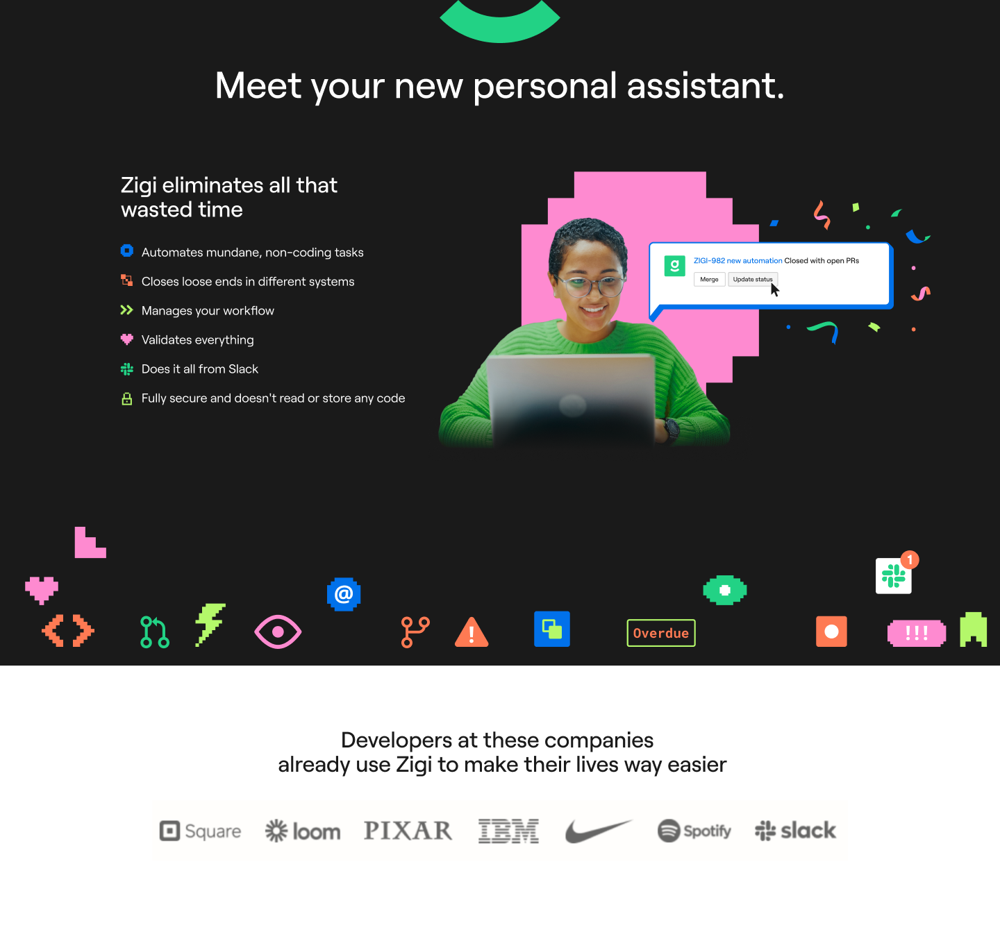
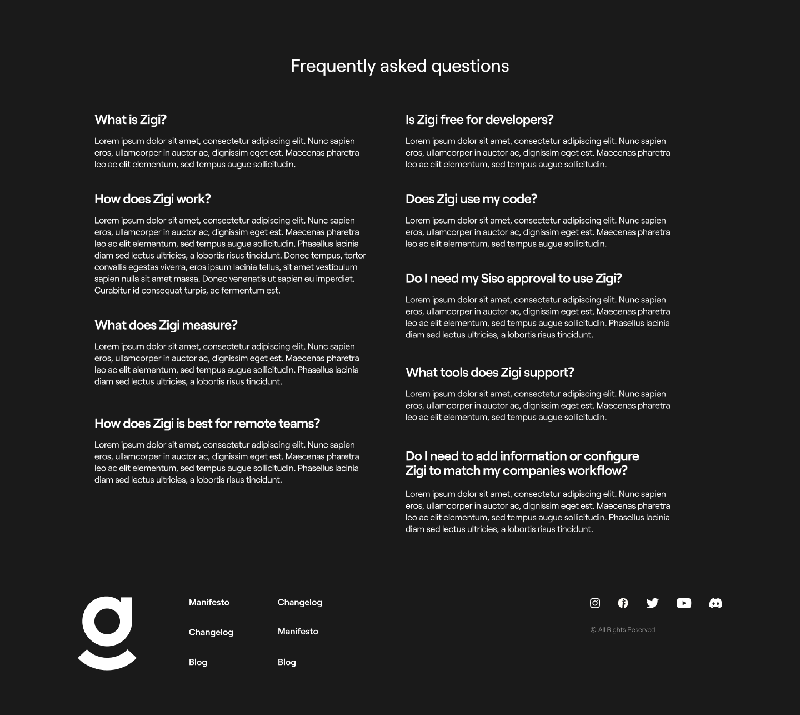
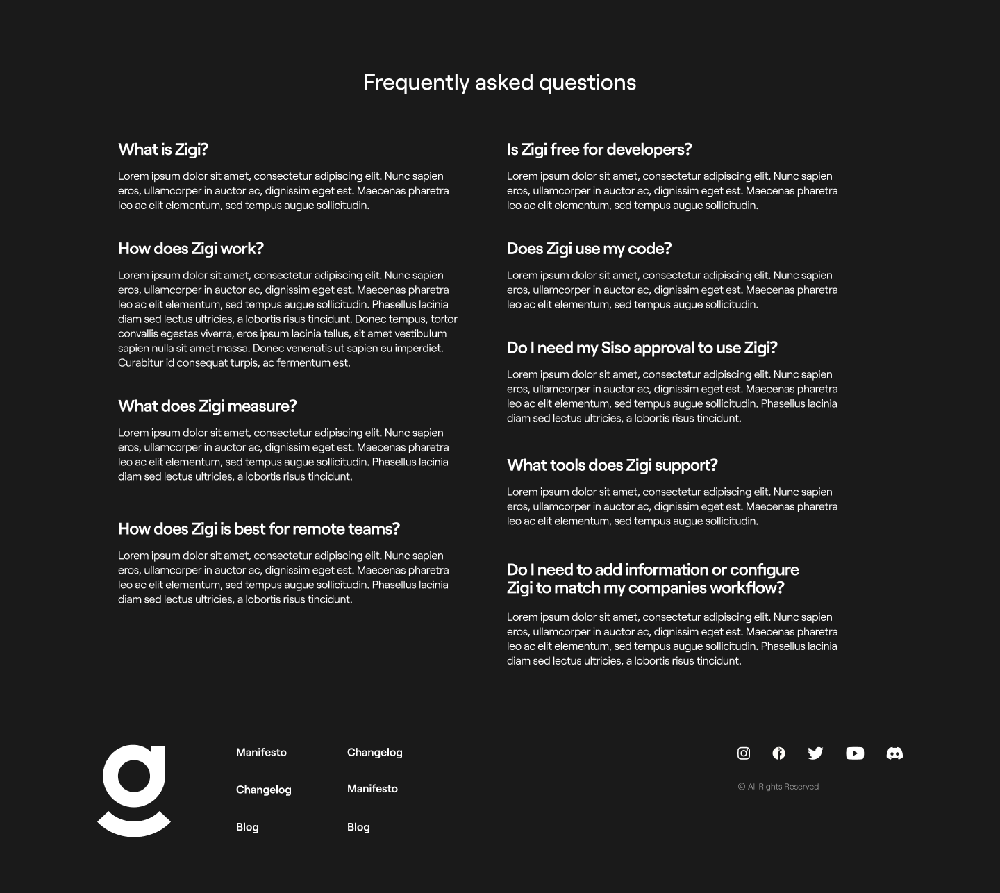
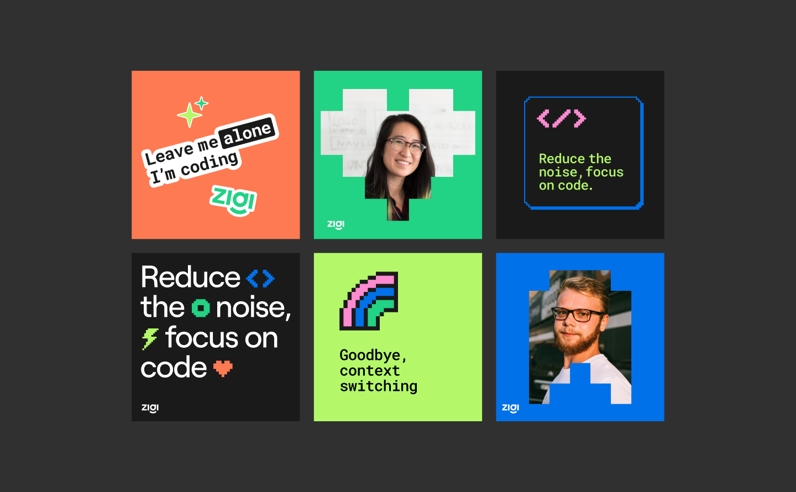
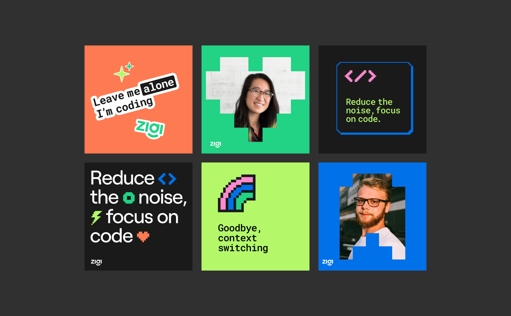

A developer’s assistant for non-coding tasks. Zigi reduces the noise
that developers face by handling all their non-coding mundane tasks, so
they can focus on coding and innovation.
Client | Zigi
Art Direction | Studio Under
Brand lead
designer | Anastasia Vlasenko
 



 





 



 
